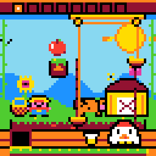
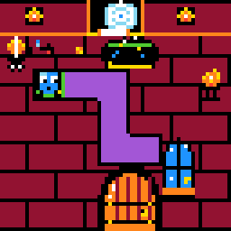
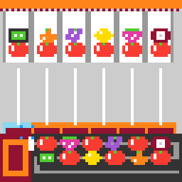

Preview draft, not submitted
The Ruler Is a Person
A game producer's notes from fifth place on ARC-AGI-3. Mark Barney and Son Pham, Team Turducken, ARC Prize 2026.
Abstract. A video game producer with no engineering background co-led a team to fifth on the ARC-AGI-3 public board. That skill was bought. What could not be bought showed when we asked machines to make the games: 1,046 made, 46 kept, each because a person played it. The unit of measure in ARC-AGI-3 is a person, and nobody has measured the unit.
In December 2024 a model called o3 came out, and I had a crisis of faith. Machines could already pass the bar exam and the medical boards. All my life people have accused me of being smart, and I have never known how smart. Smarter than a lot of people, and nowhere near the smartest people I know. If a machine could pass the tests we give our professionals, what did the word mean?
Early in 2025 I went looking at how we benchmark the new god in a box. I love failure modes. I wanted to see where it breaks. That led me to ARC, and ARC hooked me for one reason. I could not check a model's answer on a software benchmark or on Humanity's Last Exam. On ARC a little kid can tell whether the machine is right or just sounds confident. I produce video games. I'm not a software engineer or a data scientist, and I'm not much good at math. This year Son and I led a team that sat fifth of 4,923 on that benchmark's public board.
By François Chollet's own account, that placing says little about me. He defines intelligence as "the rate at which a learner turns its experience and priors into new skills at valuable tasks that involve uncertainty and adaptation" [1], and he warns that skill can be bought with priors and experience. We bought ours. This paper is about what the money could not buy.
What we bought
The entry is a public Kaggle notebook [2]. It scored 53.70 on the public board, and 50.34 when resubmitted unchanged two days later. Our best, a sibling notebook, scored 56.02. It runs a small open model, Qwen3.8-Flash-Next in Intel's 4-bit build, inside Daniel Franzen's public harness, which is built on Tufa Labs'. The model sees each screen as objects and the changes between screens. It writes Python to test its guesses. What we added is mostly plumbing, plus two checks that let the game contradict the model. The engineering is written up in full elsewhere, with what lost beside what won [3].
Almost none of that was mine to begin with. Son did the agent and performance engineering. Coding agents wrote the code I directed, and when I didn't understand a result, a model explained it. By Chollet's measure I had very expensive priors on tap. Fifth is a good hog. It was raised on other people's corn, it is not the fattest hog at the fair, and it is not what this paper is about.
The test, turned inside out
ARC-AGI-3 asks whether a machine can learn a game a person finds easy. When ARC Prize released its engine so that anyone could write games, we ran the test backwards without meaning to. Can a machine make a game a person finds easy?
Each official environment was tried by ten people, and only those fully solved by at least two of them, independently and on a first look, were admitted [4]. Our own brief added one word: easy for people, hard for AI, and fun.
With the engine in my hands I could reskin and recolor games that already existed. Son could make new ones, strange ones, well outside anything in the public set. That gap between the two of us was the first honest measurement of the year. The agents had given us the same hands. They had not given us the same ideas.
Then we let the agents try alone. Asking a coding agent for an ARC-3 game is the surest prompt for slop I know. What comes back runs. It has a grid, colors, levels, a hidden rule and a winning sequence a solver can find. It is usually not a game. A rule hangs on timing nobody can see. The picture cannot show the difference the code cares about. Budd and Scarfe name it: "Slop is what happens when an artefact is generated without path-dependence, without understanding, without respecting the phylogeny or the constraints" [5]. A program proving that a game can be won says nothing about whether a person can work it out, and that is the constraint this domain is built on.
On 8 November our player held 1,046 games made by the team and its agents. Forty-six were approved. Eight hundred were batch output credited to GPT, and not one of the eight hundred was kept [6].





Six of the games we kept. Real engine frames; all playable at https://82deutschmark.github.io/arc3-synthetic-games/
The games we kept have one thing in common: a person played them and sent them back. Lock Target went through eight versions that way. The agents wrote the code and drew the art. I played, said what was unclear, dull or borrowed, and decided what stayed. That is a producer's job, to say what a game is for and when it is finished. Budd and Scarfe warn about the supervisor illusion, "the creativity lives in the human's understanding, not in the AI's computation" [5], and it cuts both ways. Where I understood nothing, I got recolors. In their words, "AI amplifies what you bring to it." What I brought was a career of playing unfinished games and saying no.
The ruler is a person
Our agent's worst habit is telling a fluent story about a game and believing it. In one run it spent the whole game calling a rival a confused "bot" while the rival was beating it [3]. The only thing that corrected it was the game itself: a move it predicted, failing on screen. The game was the ruler. The story was not.
For the question "is this a game" there is no ruler in the code. No program can say this is clear, this is fair, this is fun. The benchmark never pretends otherwise, and that is what hooked me: a kid can check it. Its games are admitted by people, two out of ten. Its score is counted in people: how close the machine's moves come to a person's. The unit of measure in ARC-AGI-3 is a human being figuring something out for the first time.
And nobody has measured the unit. I still can't tell you how smart I am. We say the tests we have for people are flawed, and nobody has handed me a better one. It turns out to be easier to measure a machine than a person, because for the machine we have a ruler, and the ruler is us. For one year my job was to be it: the person on a first look, over and over.
My line all year was that intelligence is the capacity to add capacity. Budd and Scarfe write "the capacity to acquire capacity" [5]. That capacity can now be rented. I rented it, and it carried a game producer to fifth place. What cannot be rented yet is knowing which of the thousand things you can now make is worth keeping. Chollet's definition has a word for it that is easy to read past: skills at valuable tasks. Someone has to know what valuable is, and today that someone is a person.
What we claim, and what we don't
We claim a count, a method, and the kept games themselves: open and playable, each with the reason it is hard for a machine written beside it [6]. We bet that games a person played and fixed make better practice for an agent than games only a program checked. Nobody has measured that, including us.
One producer's taste is one ruler. ARC used ten people a game and we used mostly me. Our own review of twelve favorites found that random key presses cleared the first level of ten of them, and we have been fixing them since [7]. One person iterated faster, and found out where speed stopped helping.
Thanks. Son Pham, who led this with me and made the games I couldn't. Ronen. Daniel Franzen, Tufa Labs and Intel AutoRound. Jeremy Budd and Tim Scarfe, whose paper named what we were throwing away.
References
[1] François Chollet. On the Measure of Intelligence. 2019. https://arxiv.org/abs/1911.01547
[2] Team Turducken. Kaggle notebook, version 363005415. https://www.kaggle.com/code/sonphamorg/arc3-daniel-cnp3k5mx-ff-nosplice-o34g?scriptVersionId=363005415
[3] Team Turducken. Stuffing the Turducken. November 2026.
[4] ARC Prize. ARC-AGI-3 Technical Report, section 3.6. 2026. https://arcprize.org/media/ARC_AGI_3_Technical_Report.pdf
[5] Jeremy Budd and Tim Scarfe. Why Creativity Cannot Be Interpolated. Version 1.2, February 2026. https://archive.mlst.ai/paper/why-creativity-cannot-be-interpolated/
[6] Mark Barney. ARC-3 Synthetic Games. 8 November 2026. https://82deutschmark.github.io/arc3-synthetic-games/
[7] ARC-3 Synthetic Games. Review of the twelve featured games. 5 November 2026.